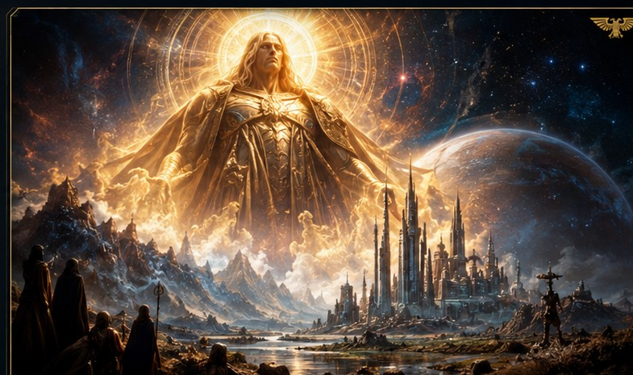
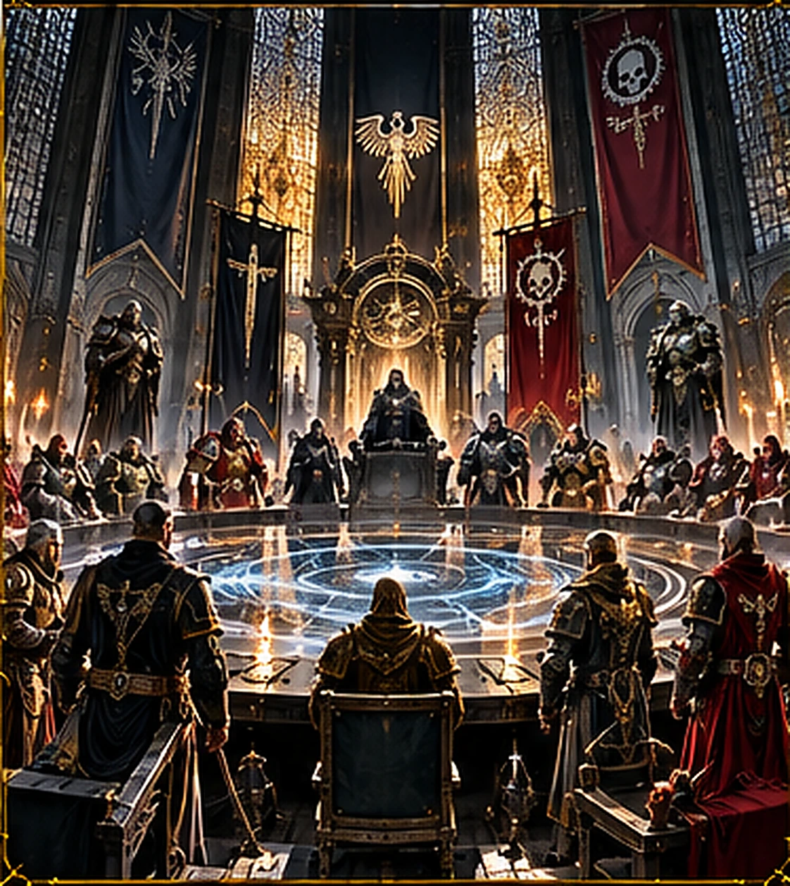
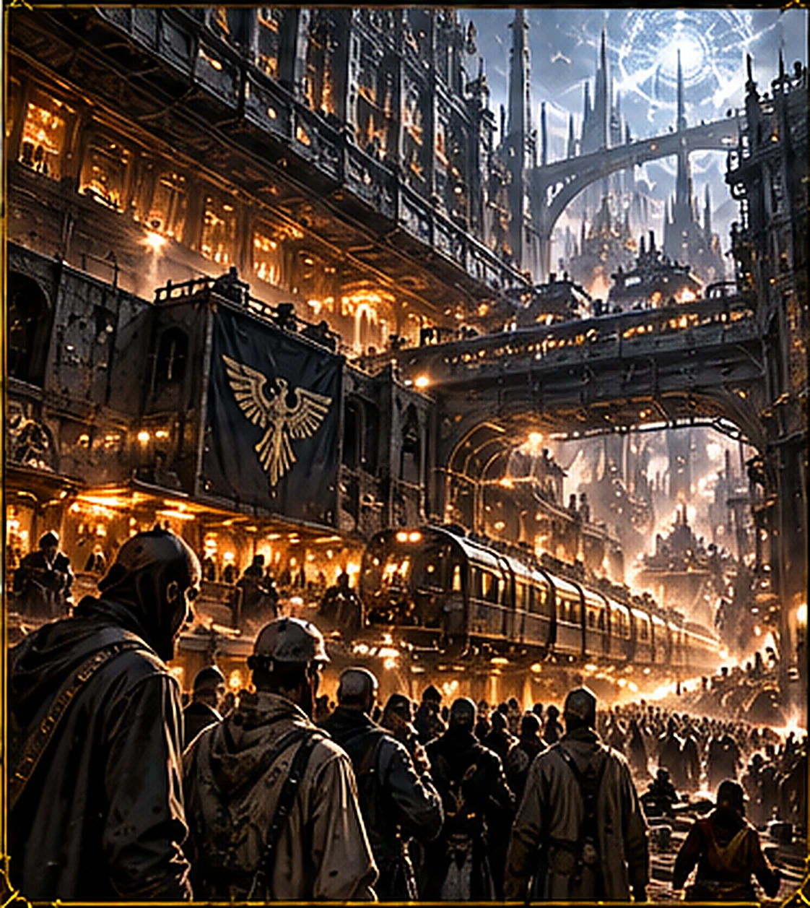

L’IMPERIUM DE L’HUMANITÉ
De la Grande Croisade à la Grande Faille, découvrez l’histoire, les institutions et les contradictions de l’Humanité au 41e millénaire. Sélectionnez un chapitre : un seul dossier s’ouvre à la fois.
Qu’est-ce que l’Imperium ?
Un million de mondes sous une même bannière

L’Imperium de l’Humanité est un empire interstellaire dont l’étendue défie l’imagination. Il revendique environ un million de mondes, dispersés à travers la Voie lactée, mais ne contrôle pas chaque système situé entre eux. Des routes de navigation relativement sûres relient certains secteurs, tandis que d’autres planètes peuvent rester isolées pendant des générations.
À première vue, cet empire paraît invincible : ses flottes sillonnent les étoiles, ses armées comptent des milliards de soldats et ses cathédrales dominent des cités gigantesques. Pourtant, son immensité constitue sa principale faiblesse. Les messages passent par des astropathes, les vaisseaux traversent le Warp et les décisions de Terra arrivent parfois trop tard pour sauver un monde.
L’Imperium se présente comme le dernier rempart de l’espèce humaine. Il est aussi un régime profondément autoritaire, dans lequel la survie collective sert souvent à justifier la répression, la censure et le sacrifice de populations entières.
La naissance de l’Imperium
De Terra à la Grande Croisade

Bien avant le 41e millénaire, l’Humanité avait connu une expansion extraordinaire, suivie d’un effondrement durant l’Ère des Luttes. Les mondes humains furent séparés par des tempêtes Warp, et Terra elle-même sombra dans les guerres entre puissances rivales.
L’Empereur apparut alors comme un conquérant et un unificateur. Après avoir soumis Terra, il s’empara des ressources de Mars grâce à une alliance avec les technoprêtres, puis lança la Grande Croisade au 30e millénaire. Son ambition était de retrouver les colonies humaines, de les intégrer à un nouvel ordre galactique et de mettre fin à leur isolement.
Pour accomplir ce projet, il créa les Primarques et les légions de Space Marines. Mais l’unification ne fut pas toujours pacifique : certains mondes rejoignirent l’Imperium volontairement, d’autres furent conquis. Derrière l’idéal d’une Humanité rassemblée se dessinait déjà un empire bâti par la guerre.
L’Hérésie d’Horus
La fracture qui a changé la galaxie

Au sommet de la Grande Croisade, l’Empereur confia une partie du commandement à Horus Lupercal, son fils favori, élevé au rang de Maître de Guerre. Sous l’influence des puissances du Chaos, Horus se retourna contre son père et entraîna dans sa rébellion plusieurs Primarques et leurs légions.
La guerre civile déchira l’Humanité. Des frères d’armes s’affrontèrent, des mondes entiers furent dévastés et les idéaux de la Grande Croisade s’effondrèrent. Le conflit culmina lors du Siège de Terra, quand les forces renégates tentèrent de prendre le Palais impérial.
Horus fut vaincu, mais l’Empereur fut si gravement blessé qu’il dut être installé sur le Trône d’Or. L’Hérésie marqua la fin d’un âge de conquête et le début d’un long déclin : l’Imperium allait désormais chercher avant tout à survivre.
L’Empereur et le Trône d’Or
Le souverain immobile de Terra

Depuis environ dix mille ans, l’Empereur demeure sur le Trône d’Or, un dispositif antique dont le fonctionnement exact échappe à la plupart des habitants de l’Imperium. Son corps ne gouverne plus comme autrefois, mais sa présence psychique reste fondamentale à la survie de l’empire.
L’Astronomican, immense phare psychique projeté depuis Terra, permet aux navigateurs de s’orienter à travers le Warp. L’Empereur y joue un rôle essentiel, même si le fonctionnement de ce phare implique également le sacrifice et le travail de nombreux psykers.
Le paradoxe est immense : celui qui voulait promouvoir une vision rationnelle de l’Humanité est aujourd’hui adoré comme le Dieu-Empereur. Des pèlerins traversent des secteurs entiers pour approcher Terra, tandis que l’Ecclésiarchie impose son culte à une grande partie de la population.
Qui dirige réellement l’Imperium ?
Une administration à l’échelle de la galaxie

L’Empereur étant incapable d’exercer le pouvoir au quotidien, les institutions impériales gouvernent en son nom. Les Hauts Seigneurs de Terra constituent traditionnellement le sommet de cette hiérarchie, mais l’équilibre du pouvoir varie selon les époques, notamment depuis le retour de Roboute Guilliman.
L’Administratum collecte les informations, les ressources et les dîmes exigées des planètes. L’Ecclésiarchie organise le culte impérial. L’Adeptus Mechanicus conserve une autonomie considérable sur les technologies et les mondes-forges. L’Inquisition enquête sur les menaces intérieures et extérieures, avec une autorité redoutée.
À l’échelle locale, des gouverneurs planétaires disposent souvent d’une grande liberté tant qu’ils livrent leurs quotas et restent loyaux. Ce système permet de maintenir un empire immense, mais engendre lenteurs, conflits de juridiction et décisions parfois absurdes.
La vie des citoyens impériaux
Mille mondes, mille destins

Un habitant de l’Imperium peut naître dans une cité-ruche où des milliards d’êtres humains vivent empilés sur des kilomètres de hauteur, dans un monde agricole voué à nourrir d’autres planètes, ou sur un monde-forge où les usines ne s’arrêtent jamais.
Les conditions de vie varient énormément. Certaines populations connaissent une existence relativement paisible ; d’autres vivent sous la menace permanente de la famine, des guerres, des mutations ou des purges. Beaucoup de citoyens ignorent presque tout de la galaxie et ne quitteront jamais leur monde natal.
La foi impériale, le travail et les obligations envers les autorités structurent le quotidien. Le paiement de la dîme peut prendre la forme de matières premières, de productions industrielles ou de régiments entiers envoyés combattre à des années-lumière de leur foyer.
Les armées de l’Imperium
Une guerre sur d’innombrables fronts

L’Astra Militarum constitue l’épine dorsale des guerres terrestres impériales : ses régiments humains combattent avec des chars, de l’artillerie et une endurance souvent héroïque. La Marine impériale assure le transport des troupes, les blocus et les batailles spatiales.
Les Space Marines sont des guerriers génétiquement améliorés, peu nombreux au regard de la taille de l’empire, mais capables de frapper là où la situation semble désespérée. Les Adepta Sororitas défendent la foi par les armes, tandis que les Custodes veillent notamment sur l’Empereur et les intérêts de Terra.
À leurs côtés, l’Adeptus Mechanicus déploie ses propres forces et machines de guerre. Ces organisations n’obéissent pas toutes à une chaîne de commandement unique : leurs rivalités peuvent parfois compliquer les campagnes les plus cruciales.
Un empire au bord du gouffre
La Grande Faille et l’Ère Indomitus

À la fin du 41e millénaire, la naissance de la Grande Faille a déchiré la galaxie et bouleversé les routes Warp. De nombreux systèmes ont été isolés ; dans l’Imperium Nihilus, de l’autre côté de cette fracture, l’accès à la lumière de l’Astronomican est devenu particulièrement difficile.
Le retour de Roboute Guilliman, Primarque des Ultramarines, a offert à l’Imperium un chef capable de réorganiser ses forces. Il a lancé la Croisade Indomitus pour secourir les mondes menacés, reprendre des territoires et déployer les nouveaux Space Marines Primaris.
Mais le danger demeure partout : forces du Chaos, Orks, Tyranides, Nécrons et rivalités internes épuisent les ressources impériales. L’Imperium possède encore une puissance colossale, mais sa guerre pour survivre semble ne jamais devoir prendre fin.
Illustrations du dossier impérial et des archives de Chroniques des Mondes.
← RETOUR À WARHAMMER 40K